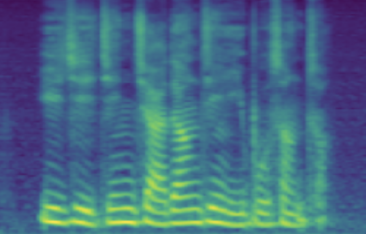
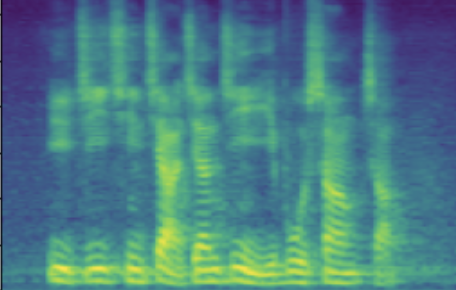
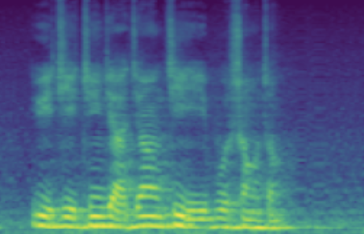

[Site Under construction] Supplementary Materials for
VoiceLens:
Controllable Speaker Generation & Editing with Flow
Arxiv: not yet available
Authors
- SHI, Yao (Wuhan University, Duke-Kunshan University)
- DING, Chen (Bytedance)
- HUANG, Chuanzeng (Bytedance)
- LI, Ming (Duke-Kunshan University, Wuhan University) ······ ming.li369@dukekunshan.edu.cn
Abstract
Currently, many multi-speaker speech synthesis and voice conversion systems address speaker variations with an embedding vector. Modeling it directly allows new voices outside of training data to be synthesized. GMM based approaches such as Tacospawn are favored in literature for this generation task, but there are still some limitations when difficult conditionings are involved.
In this paper, we propose VoiceLens, a semi-supervised flow-based approach, to model speaker embedding distributions for multi-conditional speaker generation. VoiceLens maps speaker embeddings into a combination of independent attributes and residual information. It allows new voices associated with certain attributes to be generated for existing TTS models, and attributes of known voices to be meaningfully edited. We show in this paper, VoiceLens displays an unconditional generation capacity that is similar to Tacospawn while obtaining higher controllability and flexibility when used in a conditional manner. In addition, we show synthesizing less noisy speech from known noisy speakers without re-training the TTS model is possible via solely editing their embeddings with a SNR conditioned VoiceLens model. This web page provides demos and further explainations to the submitted paper.
Method Overview
Figure 1 and 2 below is an illustrated overview of the proposed VoiceLens workflow. Given a trained Multispeaker TTS system, a set of known speaker embedding vectors (\(\mathbf{e}\)) and the speakers' partially labeled attributes (\(\mathbf{y}\)) (such as gender, age-group or general SNR level), a Normalizing Flow is trained in a semi-supervised manner to model the conditional distribution \(p(\mathbf{e}|\mathbf{y})\) of the speaker embedding conditioning on the modeled attributes. Multiple attributes are handled by partitioning the flow's base variable \(\mathbf{z}\) into multiple disjoint subspaces (assuming independence). Once trained, new speaker embeddings with desired attributes can be generated by first sampling from the appropriated prior distributions on \(\mathbf{z}\), then transforming the samples into \(\mathbf{e}\) by inversing the flow. Attributes of a known speaker embedding could be modified by first transforming its embedding into \(\mathbf{z}\), swapping in new values according to the prior distribution, then inversing the edited \(\mathbf{z}\) into \(\mathbf{e}\) with flow.

Experimental Setup
We used a Multispeaker VITS with speaker Look-Up-Table as our experimental TTS system. It was trained on DidiSpeech-2, a Mandarin Corpus containing around 1500 speakers. The TTS system was trained once and remains un-modified throughout our experiments. We modeled the speaker embedding distribution conditioning on the multi-label gender (female/male), age-group (child/adult) and SNR level (continuously distributed within [20,60] dB) with the proposed VoiceLens method.
Demo 1: Unconditional Generation
The following table presents, for each evaluation sentence, three synthesized utterances generated by the same Multi-speaker TTS system. They differ only in the synthesizer's input speaker embedding. For parallel synthesis, the speaker embedding of the original speaker to which the evaluation sentence belongs is provided as input. (As the case in standard multi-speaker TTS). For VoiceLens generated, the input embedding is unconditionally sampled from the trained VoiceLens model, representing a newly generated voice. For nearest known, the input embedding is selected as the embedding of the known speaker whose voice is the closest to the generated voice in terms of speaker verification cosine distance.
| Id | parallel synthesis | VoiceLens generated | nearest known |
| 1 | |||
| 2 | |||
| 3 | |||
| 4 | |||
| 5 |
Demo 2: Conditional Generation
The following table presents a series of conditional generation results obtained from the proposed model. For each row, a (gender-age) condition is specified before sampling in \(\mathbf{z}\). After an instance of \(\mathbf{z}\) is sampled, the dimensions related to SNR modeling (denoted by \(z_{snr}\) here) are set as values from the range(20, 60, 10), forming the columns in table. We present synthesized utterances for voices generated under the above stated conditions, and report SNRs estimated from these samples. It can be observed that the actual SNR measured post-hoc closely follows the controlling conditions (\(z_{snr}\)) set before generation.
Left click on the mel-spectrogram images to play samples!
| condition | \(z_{snr}\) | 20 | 30 | 40 | 50 | 60 |
| female child | SNR/dB | 23.501 | 31.815 | 36.330 | 42.908 | 53.411 |
| Melspec |  |
 |
||||
| male child | SNR/dB | 21.963 | 30.903 | 39.134 | 54.380 | 64.139 |
| Melspec |  |
 | ||||
| female adult | SNR/dB | 25.908 | 31.723 | 44.460 | 47.382 | 55.932 |
| Melspec |  |
 |
 |
|||
| male adult | SNR/dB | 19.184 | 26.030 | 41.676 | 49.363 | 63.753 |
| Melspec |  |  |
Demo 3: Known Speaker Editing
3.1: Flipping Categorical Attributes (gender-swapping)
The following table showcases speaker editing on two categorical attributes gender and age-group. For each case, we choose one real male adult speaker from the train speakers, presents one sample utterance from the dataset and conventional synthesis result in recording and synthesized columns. Then, we set the \(z_{gender}\) and \(z_{age}\) to a new value sampled from the known prior distributions \(p(z_{gender}|\text{female})\) and \(p(z_{age}|\text{child})\) respectively. The edited voices are presented in the flip gender and flip age-group respectively.
| case | recording | synthesized | flip gender | flip age-group |
| 1 | ||||
| 2 |
3.2: Adjusting Continuous Attributes (de-noising)
The following table showcases speaker editing on the SNR attribute. For each case, a known low SNR train speaker is selected and his/her recording and conventional synthesis sample shown in the first two columns. We then manully set the \(z_{snr}\) value to around 45 and synthesize the edited speaker in the edited columns.
Left click on the mel-spectrogram images to play samples!
| source | recording | synthesis | edited | |
| 1 | SNR/dB | 20.25 | 19.28 | 45.76 |
| Melspec |  |
 |
||
| 1 | SNR/dB | 24.443 | 45.856 | |
| Melspec |  |  |
3.3 More Examples on Speaker De-Noising
We selected 199 known speakers with SNR levels lower than 30dB in synthesis and boosted their SNR level by around 14.5dB via speaker editing as described in our paper. We conducted MOS similarity test on a random subset of these speakers and found a relative similarity loss of 0.44. And further observed that 76% of these speakers have a insignificant similarity difference before and after editing.
We show here samples of editing at different similarity levels as measured by our subjective tests.
| samples with \(\le0.28\) SMOS loss, takes up ~ 32% of samples | |||||
| synthesis | |||||
| edited | |||||
| samples with \(\in(0.28 \sim 0.56)\) SMOS loss, takes up ~ 53% of samples | |||||
| synthesis | |||||
| edited | |||||
| samples with \(\ge1.12\) SMOS loss, takes up ~ 4% of samples (only slight mismatch) | ||
| synthesis | ||
| edited | ||